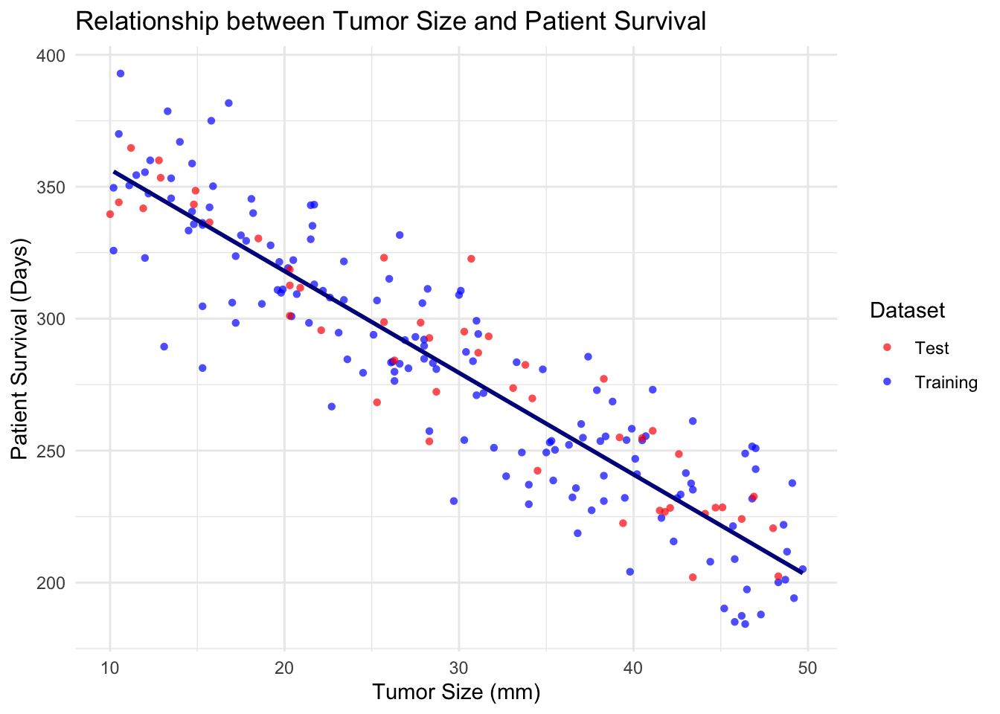
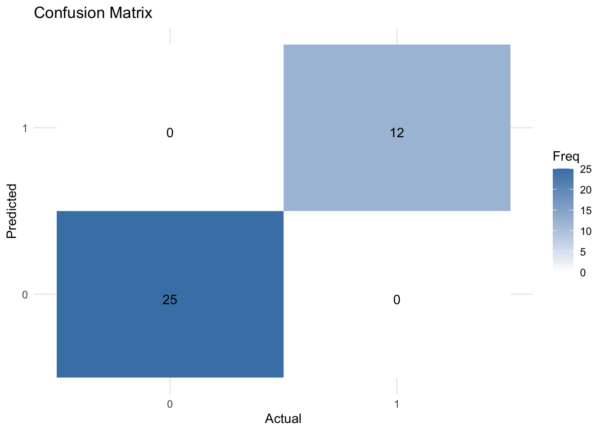
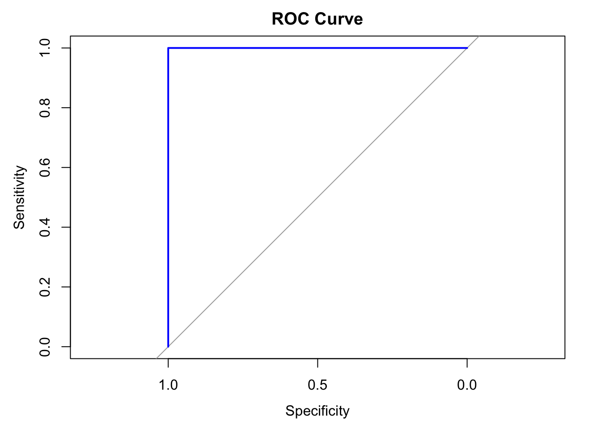
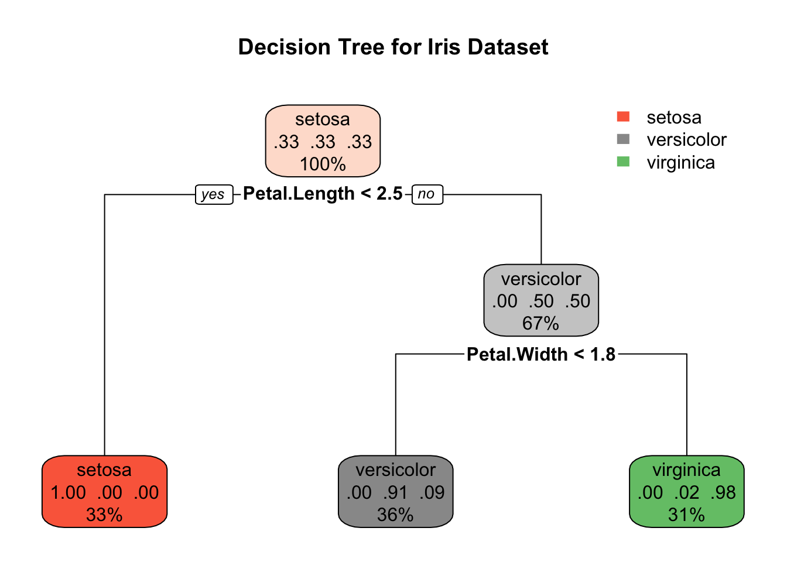
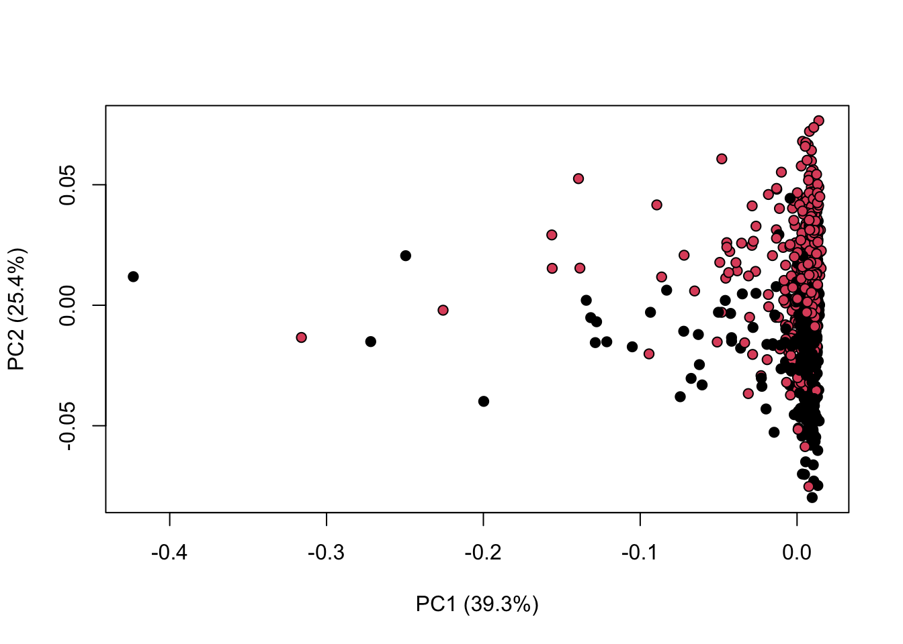
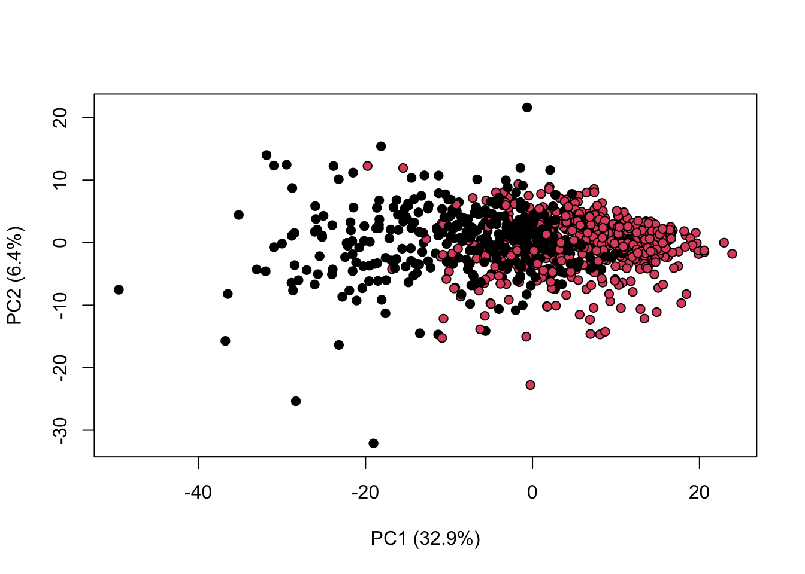
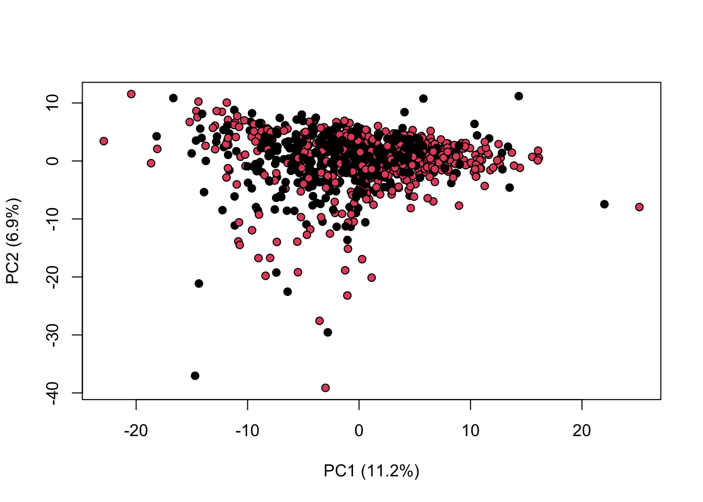

Last updated: 2024-09-18
Checks: 7 0
Knit directory: Tutorials/
This reproducible R Markdown analysis was created with workflowr (version 1.7.1). The Checks tab describes the reproducibility checks that were applied when the results were created. The Past versions tab lists the development history.
Great! Since the R Markdown file has been committed to the Git repository, you know the exact version of the code that produced these results.
Great job! The global environment was empty. Objects defined in the global environment can affect the analysis in your R Markdown file in unknown ways. For reproduciblity it’s best to always run the code in an empty environment.
The command set.seed(20240905) was run prior to running
the code in the R Markdown file. Setting a seed ensures that any results
that rely on randomness, e.g. subsampling or permutations, are
reproducible.
Great job! Recording the operating system, R version, and package versions is critical for reproducibility.
Nice! There were no cached chunks for this analysis, so you can be confident that you successfully produced the results during this run.
Great job! Using relative paths to the files within your workflowr project makes it easier to run your code on other machines.
Great! You are using Git for version control. Tracking code development and connecting the code version to the results is critical for reproducibility.
The results in this page were generated with repository version a7f82c5. See the Past versions tab to see a history of the changes made to the R Markdown and HTML files.
Note that you need to be careful to ensure that all relevant files for
the analysis have been committed to Git prior to generating the results
(you can use wflow_publish or
wflow_git_commit). workflowr only checks the R Markdown
file, but you know if there are other scripts or data files that it
depends on. Below is the status of the Git repository when the results
were generated:
Ignored files:
Ignored: .DS_Store
Ignored: data/.DS_Store
Unstaged changes:
Deleted: data/COADREAD.clin.merged.picked.txt
Deleted: data/COADREAD.rnaseqv2__illuminahiseq_rnaseqv2__unc_edu__Level_3__RSEM_genes_normalized__data.data.txt
Note that any generated files, e.g. HTML, png, CSS, etc., are not included in this status report because it is ok for generated content to have uncommitted changes.
These are the previous versions of the repository in which changes were
made to the R Markdown (analysis/Supervised_learning.Rmd)
and HTML (docs/Supervised_learning.html) files. If you’ve
configured a remote Git repository (see ?wflow_git_remote),
click on the hyperlinks in the table below to view the files as they
were in that past version.
| File | Version | Author | Date | Message |
|---|---|---|---|---|
| html | a7f82c5 | tkcaccia | 2024-09-18 | Build site. |
| html | 83f8d4e | tkcaccia | 2024-09-16 | Build site. |
| html | 159190a | tkcaccia | 2024-09-16 | Build site. |
| html | 6d23cdb | tkcaccia | 2024-09-16 | Build site. |
| html | 6301d0a | tkcaccia | 2024-09-16 | Build site. |
| html | 897778a | tkcaccia | 2024-09-16 | Build site. |
| Rmd | 9a91f51 | tkcaccia | 2024-09-16 | Start my new project |
Supervised learning is learning in which we teach or train the machine using data that is well labeled meaning some data is already tagged with the correct answer.
The machine is provided with a test dataset so that the supervised learning algorithm analyses the training data and produces a correct outcome from labeled data.
Supervised learning itself is composed of;
Regression, where the output is numerical
Classification, where the output is
categorical
Regression analysis is a statistical technique used to model and
analyze the relationship between a dependent variable and one
(univariate regression) or more
independent
variables(multivariate regression).
Simple linear regression involves a single independent variable and fits the equation;
where;
\(y\) is the dependent variable
\(x\) is the independent variable
\(b_0\) is the intercept
\(b_1\) is the slope of the linear graph
The caret library is important for data partitioning,
model training and evaluation
library(caret)
# Load the dataset
df <- read.csv('data/tumor_size_patient_survival.csv')
# Display the first rows
head(df) tumor_size patient_survival
1 26.3 279.9
2 12.2 347.4
3 41.5 227.3
4 21.5 330.1
5 28.0 292.1
6 22.2 310.6Functions like head(), summary(),
str() can be used to get an overview of the data.
This step involves;
handling missing values by either removing missing values or mean, median or mode imputation
encoding categorical variables
normalising and standardising numerical features
Usually the dataset can be split into 75% for training and 25% for test. This facilitates data generalisation and avoids over fitting.
set.seed(45) # for reproducibility
trainIndex <- createDataPartition(df$patient_survival, p = 0.75, list = FALSE)
trainData <- df[trainIndex, ]
testData <- df[-trainIndex, ]This involves fitting the model to the training set using the
lm() function
model <- lm(patient_survival ~ tumor_size, data = trainData)
# Extract coefficients
coefficients <- coef(model)
coefficients(Intercept) tumor_size
395.077138 -3.853336 The linear equation that fits to the data in our training set is
This involves assessing the performance of the model on the testing set. There are various metrics for model evaluation including;
Mean Absolute Error (MAE)
Mean Squared Error (MSE)
Root Mean Squared Error (RMSE)
R-Squared (R2)Score
test_predictions <- predict(model, newdata = testData)
mae <- MAE(test_predictions, testData$patient_survival)
rmse <- RMSE(test_predictions, testData$patient_survival)
r2_score <- summary(model)$r.squared
cat('MAE on test set (in days): ', mae, "\n",
'RMSE on test set (in days): ', rmse, "\n",
'R-Squared Score: ', r2_score)MAE on test set (in days): 13.04724
RMSE on test set (in days): 15.93548
R-Squared Score: 0.820814library(ggplot2)
# Add a column to differentiate between training and test data
trainData$dataset <- "Training"
testData$dataset <- "Test"
# Combine train and test data into a single dataframe for plotting
combinedData <- rbind(trainData, testData)
# Create a scatter plot with regression line for both training and test sets
ggplot(combinedData, aes(x = tumor_size, y = patient_survival, color = dataset, shape = dataset)) +
geom_point(alpha = 0.7) +
geom_smooth(data = trainData, aes(x = tumor_size, y = patient_survival), method = "lm", se = FALSE, color = "#00008B") +
labs(title = "Relationship between Tumor Size and Patient Survival",
x = "Tumor Size (mm)",
y = "Patient Survival (Days)") +
theme_minimal() +
scale_color_manual(values = c("Training" = "blue", "Test" = "red")) +
scale_shape_manual(values = c("Training" = 16, "Test" = 16)) +
guides(color = guide_legend(title = "Dataset"),
shape = guide_legend(title = "Dataset"))`geom_smooth()` using formula = 'y ~ x'
| Version | Author | Date |
|---|---|---|
| 897778a | tkcaccia | 2024-09-16 |
Most real-life scenarios are characterised by multivariate or high-dimensional features where more than one independent variable influences the target or dependent variable. Multi variate algorithms fit the model;
The mpg dataset from the ggplot2 package
can be used for multivariate regression. It includes information on car
attributes. we will choose some relevant attributes to predict
hwy, miles per gallon (MPG).
# Load the dataset
library(ggplot2)
data(mpg)
df <- mpg
head(df)# A tibble: 6 × 11
manufacturer model displ year cyl trans drv cty hwy fl class
<chr> <chr> <dbl> <int> <int> <chr> <chr> <int> <int> <chr> <chr>
1 audi a4 1.8 1999 4 auto(l5) f 18 29 p compa…
2 audi a4 1.8 1999 4 manual(m5) f 21 29 p compa…
3 audi a4 2 2008 4 manual(m6) f 20 31 p compa…
4 audi a4 2 2008 4 auto(av) f 21 30 p compa…
5 audi a4 2.8 1999 6 auto(l5) f 16 26 p compa…
6 audi a4 2.8 1999 6 manual(m5) f 18 26 p compa…We can choose predictors; displ - (engine displacement),
cyl - (number of cylinders), year - (year of
the car) and class - (type of car)
library(caret)
set.seed(30) # for reproducibility
# Split the data into training and testing sets
trainIndex <- createDataPartition(df$hwy, p = 0.75, list = FALSE)
trainData <- df[trainIndex, ]
testData <- df[-trainIndex, ]model_mv <- lm(hwy ~ displ + cyl + year + class, data = trainData)
summary(model_mv)
Call:
lm(formula = hwy ~ displ + cyl + year + class, data = trainData)
Residuals:
Min 1Q Median 3Q Max
-5.1700 -1.5322 -0.1473 1.0249 15.1030
Coefficients:
Estimate Std. Error t value Pr(>|t|)
(Intercept) -183.14115 91.73394 -1.996 0.047511 *
displ -1.06300 0.52272 -2.034 0.043576 *
cyl -1.11663 0.36516 -3.058 0.002596 **
year 0.11135 0.04593 2.424 0.016399 *
classcompact -4.06888 1.94849 -2.088 0.038295 *
classmidsize -3.82081 1.89582 -2.015 0.045468 *
classminivan -6.82814 1.98819 -3.434 0.000749 ***
classpickup -10.55172 1.76709 -5.971 1.38e-08 ***
classsubcompact -3.29990 1.90675 -1.731 0.085364 .
classsuv -9.35511 1.70649 -5.482 1.53e-07 ***
---
Signif. codes: 0 '***' 0.001 '**' 0.01 '*' 0.05 '.' 0.1 ' ' 1
Residual standard error: 2.7 on 167 degrees of freedom
Multiple R-squared: 0.8091, Adjusted R-squared: 0.7989
F-statistic: 78.67 on 9 and 167 DF, p-value: < 2.2e-16test_predictions_mv <- predict(model_mv, newdata = testData)
mae <- MAE(test_predictions_mv, testData$hwy)
rmse <- RMSE(test_predictions_mv, testData$hwy)
r2_score <- summary(model)$r.squared
cat('MAE on test set (in days): ', mae, "\n",
'RMSE on test set (in days): ', rmse, "\n",
'R-Squared Score: ', r2_score)MAE on test set (in days): 1.804035
RMSE on test set (in days): 2.325899
R-Squared Score: 0.820814logistic regression is classification algorithm used to predict a binary class label (for example, 0 or 1, cancer or no cancer).
LR has much in common with linear regression, the difference being
that linear regression is used to predict a
continuous target, whereas logistic regression is used to
predict a categorical target.
We can modify the iris dataset to demonstrate logistic
regression for binary classification by classifying whether a flower is
of “setosa” species or not.
Converting the iris data set into binary classification by creating a
variable Issetosa
data(iris)
head(iris) Sepal.Length Sepal.Width Petal.Length Petal.Width Species
1 5.1 3.5 1.4 0.2 setosa
2 4.9 3.0 1.4 0.2 setosa
3 4.7 3.2 1.3 0.2 setosa
4 4.6 3.1 1.5 0.2 setosa
5 5.0 3.6 1.4 0.2 setosa
6 5.4 3.9 1.7 0.4 setosairis$IsSetosa <- ifelse(iris$Species == "setosa", 1, 0)
head(iris) Sepal.Length Sepal.Width Petal.Length Petal.Width Species IsSetosa
1 5.1 3.5 1.4 0.2 setosa 1
2 4.9 3.0 1.4 0.2 setosa 1
3 4.7 3.2 1.3 0.2 setosa 1
4 4.6 3.1 1.5 0.2 setosa 1
5 5.0 3.6 1.4 0.2 setosa 1
6 5.4 3.9 1.7 0.4 setosa 1Split the dataset into training (75%) and test (25%) sets
library(caret)
set.seed(123) # for reproducibility
#
train_index <- createDataPartition(iris$IsSetosa, p = 0.75, list = FALSE)
train_data <- iris[train_index, ]
test_data <- iris[-train_index, ]We shall predict IsSetosa using
Sepal.Length and Sepal.Width
model_lr <- glm(IsSetosa ~ Sepal.Length + Sepal.Width, data = train_data, family = binomial)
summary(model_lr)
Call:
glm(formula = IsSetosa ~ Sepal.Length + Sepal.Width, family = binomial,
data = train_data)
Coefficients:
Estimate Std. Error z value Pr(>|z|)
(Intercept) 442.8 144901.2 0.003 0.998
Sepal.Length -165.6 51459.9 -0.003 0.997
Sepal.Width 139.8 51477.0 0.003 0.998
(Dispersion parameter for binomial family taken to be 1)
Null deviance: 1.4431e+02 on 112 degrees of freedom
Residual deviance: 2.1029e-08 on 110 degrees of freedom
AIC: 6
Number of Fisher Scoring iterations: 25# Make predictions on the training data
test_predictions <- predict(model_lr, newdata = test_data, type = "response")
# Convert the predicted probabilities to binary outcomes
predicted_class <- ifelse(test_predictions > 0.5, 1, 0)
predicted_class 1 2 3 5 11 18 19 28 33 36 48 49 55 56 57 58 59 61 62 65
1 1 1 1 1 1 1 1 1 1 1 1 0 0 0 0 0 0 0 0
66 70 77 83 84 94 95 98 100 105 111 113 116 125 131 135 141
0 0 0 0 0 0 0 0 0 0 0 0 0 0 0 0 0 Confusion matrix
A confusion matrix is a 2×2 table that shows the predicted values from the model vs. the actual values from the test dataset.
It is a common way to evaluate the performance of a logistic regression model.
library(caret)
# Create a confusion matrix using caret
conf_matrix <- confusionMatrix(as.factor(predicted_class), as.factor(test_data$IsSetosa))
print(conf_matrix)Confusion Matrix and Statistics
Reference
Prediction 0 1
0 25 0
1 0 12
Accuracy : 1
95% CI : (0.9051, 1)
No Information Rate : 0.6757
P-Value [Acc > NIR] : 5.016e-07
Kappa : 1
Mcnemar's Test P-Value : NA
Sensitivity : 1.0000
Specificity : 1.0000
Pos Pred Value : 1.0000
Neg Pred Value : 1.0000
Prevalence : 0.6757
Detection Rate : 0.6757
Detection Prevalence : 0.6757
Balanced Accuracy : 1.0000
'Positive' Class : 0
library(ggplot2)
library(reshape2)
# Convert confusion matrix to a dataframe
conf_matrix_df <- as.data.frame(conf_matrix$table)
# Create a heatmap using ggplot2
ggplot(data = conf_matrix_df, aes(x = Reference, y = Prediction, fill = Freq)) +
geom_tile() +
geom_text(aes(label = Freq), vjust = 1) +
scale_fill_gradient(low = "white", high = "steelblue") +
theme_minimal() +
labs(title = "Confusion Matrix", x = "Actual", y = "Predicted")
| Version | Author | Date |
|---|---|---|
| 897778a | tkcaccia | 2024-09-16 |
The ROC curve is a visual representation of model performance across all thresholds.
The ROC curve is drawn by calculating the true positive rate (TPR) and false positive rate (FPR) at every possible threshold, then graphing TPR over FPR
The area under the ROC curve (AUC) represents the probability that the model, if given a randomly chosen positive and negative example, will rank the positive higher than the negative.
library(pROC)
# Create ROC curve
roc_curve <- roc(test_data$IsSetosa, test_predictions)
# Plot ROC curve
plot(roc_curve, main = "ROC Curve", col = "blue", lwd = 2)
| Version | Author | Date |
|---|---|---|
| 897778a | tkcaccia | 2024-09-16 |
# Compute AUC
auc_value <- auc(roc_curve)
print(paste("AUC: ", round(auc_value, 4)))[1] "AUC: 1"K-nearest neighbors works by directly measuring the (Euclidean) distance between observations and inferring the class of unlabeled data from the class of its nearest neighbors.
Typically in machine learning, there are two clear steps, where one
first trains a model and then uses the model to predict new
outputs (class labels in this case). In the kNN, these two
steps are combined into a single function call to knn.
Lets draw a set of 50 random iris observations to train the model and predict the species of another set of 50 randomly chosen flowers. The knn function takes the training data, the new data (to be inferred) and the labels of the training data, and returns (by default) the predicted class.
set.seed(12L)
train <- sample(150, 50)
test <- sample(150, 50)
library("class")
knnres <- knn(iris[train, -5], iris[test, -5], iris$Species[train])
head(knnres)[1] versicolor setosa versicolor setosa setosa setosa
Levels: setosa versicolor virginicaTree-based methods are supervised learning algorithms that partition data into subsets based on feature values.
Types of Tree-based methods;
Decision trees: In these models where each internal node represents a feature test, each branch represents the outcome of the test, and each leaf node represents a class label or a continuous value
Ensemble Methods: These methods combine multiple decision trees to improve performance. Examples include; Random Forest model, boosting models (Xboost)
Decision trees can be used as classification or regression algorithms.
Let us classify the species of iris flowers based on the features in the dataset.
#install.packages("rpart.plot")
#install.packages("randomForest")
library(caret)
library(rpart)
library(rpart.plot)
library(randomForest)
# Load the iris dataset
data(iris)model_tree <- rpart(Species ~ ., data = iris, method = "class")rpart.plot(model_tree, main = "Decision Tree for Iris Dataset")
| Version | Author | Date |
|---|---|---|
| 897778a | tkcaccia | 2024-09-16 |
tree_predictions <- predict(model_tree, type = "class")
conf_matrix_tree <- confusionMatrix(tree_predictions, iris$Species)
print("Decision Tree Confusion Matrix: ")[1] "Decision Tree Confusion Matrix: "print(conf_matrix_tree)Confusion Matrix and Statistics
Reference
Prediction setosa versicolor virginica
setosa 50 0 0
versicolor 0 49 5
virginica 0 1 45
Overall Statistics
Accuracy : 0.96
95% CI : (0.915, 0.9852)
No Information Rate : 0.3333
P-Value [Acc > NIR] : < 2.2e-16
Kappa : 0.94
Mcnemar's Test P-Value : NA
Statistics by Class:
Class: setosa Class: versicolor Class: virginica
Sensitivity 1.0000 0.9800 0.9000
Specificity 1.0000 0.9500 0.9900
Pos Pred Value 1.0000 0.9074 0.9783
Neg Pred Value 1.0000 0.9896 0.9519
Prevalence 0.3333 0.3333 0.3333
Detection Rate 0.3333 0.3267 0.3000
Detection Prevalence 0.3333 0.3600 0.3067
Balanced Accuracy 1.0000 0.9650 0.9450A random forest allows us to determine the most important predictors across the explanatory variables by generating many decision trees and then ranking the variables by importance.
model_rf <- randomForest(Species ~ ., data = iris, ntree = 100)
# Print model summary
print(model_rf)
Call:
randomForest(formula = Species ~ ., data = iris, ntree = 100)
Type of random forest: classification
Number of trees: 100
No. of variables tried at each split: 2
OOB estimate of error rate: 6%
Confusion matrix:
setosa versicolor virginica class.error
setosa 50 0 0 0.00
versicolor 0 47 3 0.06
virginica 0 6 44 0.12# Make predictions and evaluate
rf_predictions <- predict(model_rf)
conf_matrix_rf <- confusionMatrix(rf_predictions, iris$Species)
print("Random Forest Confusion Matrix:")[1] "Random Forest Confusion Matrix:"print(conf_matrix_rf)Confusion Matrix and Statistics
Reference
Prediction setosa versicolor virginica
setosa 50 0 0
versicolor 0 47 6
virginica 0 3 44
Overall Statistics
Accuracy : 0.94
95% CI : (0.8892, 0.9722)
No Information Rate : 0.3333
P-Value [Acc > NIR] : < 2.2e-16
Kappa : 0.91
Mcnemar's Test P-Value : NA
Statistics by Class:
Class: setosa Class: versicolor Class: virginica
Sensitivity 1.0000 0.9400 0.8800
Specificity 1.0000 0.9400 0.9700
Pos Pred Value 1.0000 0.8868 0.9362
Neg Pred Value 1.0000 0.9691 0.9417
Prevalence 0.3333 0.3333 0.3333
Detection Rate 0.3333 0.3133 0.2933
Detection Prevalence 0.3333 0.3533 0.3133
Balanced Accuracy 1.0000 0.9400 0.9250Is a technique used to assess the generalisability of a model to new data. It involves dividing the dataset into multiple folds and training the model on each fold while using the remaining set for validation.
This function performs a 10-fold cross-validation on a given data set using Partial Least Squares (PLS) model. To assess the prediction ability of the model, a 10-fold cross-validation is conducted by generating splits with a ratio 1:9 of the data set. Permutation testing was undertaken to estimate the classification/regression performance of predictors.
library(KODAMA)
data(iris)
data=iris[,-5]
labels=iris[,5]
pp=pls.double.cv(data,labels)..........print(pp$Q2Y) [1] 0.5708579 0.5644874 0.5684284 0.5676491 0.5577177 0.5650870 0.5662088
[8] 0.5682598 0.5632832 0.5629809table(pp$Ypred,labels) labels
setosa versicolor virginica
setosa 49 0 0
versicolor 1 33 9
virginica 0 17 41Is the process of modifying and converting input features of a data set by applying mathematical operations to improve the learning and prediction performance of ML models.
Transformation techniques include scaling, normalisation and logarithmisation, which deal with differences in scale and distribution between features, non-linearity and outliers.
Input features (variables) may have different units, e.g. kilometre, day, year, etc., and so the variables have different scales and probably different distributions which increases the learning difficulty of ML algorithms from the data.
A number of different normalization methods are provided in KODAMA:
“none”: no normalization method is applied.
“pqn”: the Probabilistic Quotient Normalization is computed as described in Dieterle, et al. (2006).
“sum”: samples are normalized to the sum of the absolute value of all variables for a given sample.
“median”: samples are normalized to the median value of all variables for a given sample.
“sqrt”: samples are normalized to the root of the sum of the squared value of all variables for a given sample.
library(KODAMA)
data(MetRef)
u=MetRef$data;
u=u[,-which(colSums(u)==0)]
u=normalization(u)$newXtrain
class=as.numeric(as.factor(MetRef$gender))
cc=pca(u)
plot(cc$x,pch=21,bg=class)
| Version | Author | Date |
|---|---|---|
| 897778a | tkcaccia | 2024-09-16 |
A number of different scaling methods are provided in KODAMA:
“none”: no scaling method is applied.
“centering”: centers the mean to zero.
“autoscaling”: centers the mean to zero and scales
data by dividing each variable by the variance.
“rangescaling”: centers the mean to zero and scales
data by dividing each variable by the difference between the minimum and
the maximum value.
“paretoscaling”: centers the mean to zero and scales
data by dividing each variable by the square root of the standard
deviation. Unit scaling divides each variable by the standard deviation
so that each variance equal to 1.
library(KODAMA)
data(MetRef)
u=MetRef$data;
u=u[,-which(colSums(u)==0)]
u=scaling(u)$newXtrain
class=as.numeric(as.factor(MetRef$gender))
cc=pca(u)
plot(cc$x,pch=21,bg=class,xlab=cc$txt[1],ylab=cc$txt[2])
| Version | Author | Date |
|---|---|---|
| 897778a | tkcaccia | 2024-09-16 |
We can combine both normalisation and scaling to see the difference in the output
library(KODAMA)
data(MetRef)
u=MetRef$data;
u=u[,-which(colSums(u)==0)]
u=normalization(u)$newXtrain
u=scaling(u)$newXtrain
class=as.numeric(as.factor(MetRef$gender))
cc=pca(u)
plot(cc$x,pch=21,bg=class,xlab=cc$txt[1],ylab=cc$txt[2])
| Version | Author | Date |
|---|---|---|
| 897778a | tkcaccia | 2024-09-16 |
sessionInfo()R version 4.3.3 (2024-02-29)
Platform: aarch64-apple-darwin20 (64-bit)
Running under: macOS Sonoma 14.5
Matrix products: default
BLAS: /Library/Frameworks/R.framework/Versions/4.3-arm64/Resources/lib/libRblas.0.dylib
LAPACK: /Library/Frameworks/R.framework/Versions/4.3-arm64/Resources/lib/libRlapack.dylib; LAPACK version 3.11.0
locale:
[1] en_US.UTF-8/en_US.UTF-8/en_US.UTF-8/C/en_US.UTF-8/en_US.UTF-8
time zone: America/Bogota
tzcode source: internal
attached base packages:
[1] stats graphics grDevices utils datasets methods base
other attached packages:
[1] KODAMA_3.1 umap_0.2.10.0 Rtsne_0.17
[4] minerva_1.5.10 randomForest_4.7-1.1 rpart.plot_3.1.2
[7] rpart_4.1.23 class_7.3-22 pROC_1.18.5
[10] reshape2_1.4.4 caret_6.0-94 lattice_0.22-6
[13] ggplot2_3.5.1 workflowr_1.7.1
loaded via a namespace (and not attached):
[1] rlang_1.1.4 magrittr_2.0.3 git2r_0.33.0
[4] e1071_1.7-14 compiler_4.3.3 getPass_0.2-4
[7] mgcv_1.9-1 png_0.1-8 callr_3.7.6
[10] vctrs_0.6.5 stringr_1.5.1 pkgconfig_2.0.3
[13] fastmap_1.2.0 labeling_0.4.3 utf8_1.2.4
[16] promises_1.3.0 rmarkdown_2.27 prodlim_2024.06.25
[19] ps_1.7.7 purrr_1.0.2 xfun_0.46
[22] cachem_1.1.0 jsonlite_1.8.8 recipes_1.0.10
[25] highr_0.11 later_1.3.2 parallel_4.3.3
[28] R6_2.5.1 bslib_0.8.0 stringi_1.8.4
[31] reticulate_1.39.0 parallelly_1.38.0 lubridate_1.9.3
[34] jquerylib_0.1.4 Rcpp_1.0.13 iterators_1.0.14
[37] knitr_1.48 future.apply_1.11.2 httpuv_1.6.15
[40] Matrix_1.6-5 splines_4.3.3 nnet_7.3-19
[43] timechange_0.3.0 tidyselect_1.2.1 rstudioapi_0.16.0
[46] yaml_2.3.10 timeDate_4032.109 codetools_0.2-20
[49] processx_3.8.4 listenv_0.9.1 tibble_3.2.1
[52] plyr_1.8.9 withr_3.0.1 askpass_1.2.0
[55] evaluate_0.24.0 future_1.34.0 survival_3.7-0
[58] proxy_0.4-27 pillar_1.9.0 whisker_0.4.1
[61] foreach_1.5.2 stats4_4.3.3 generics_0.1.3
[64] rprojroot_2.0.4 munsell_0.5.1 scales_1.3.0
[67] globals_0.16.3 glue_1.7.0 tools_4.3.3
[70] data.table_1.15.4 RSpectra_0.16-2 ModelMetrics_1.2.2.2
[73] gower_1.0.1 fs_1.6.4 grid_4.3.3
[76] ipred_0.9-15 colorspace_2.1-1 nlme_3.1-165
[79] cli_3.6.3 fansi_1.0.6 lava_1.8.0
[82] dplyr_1.1.4 gtable_0.3.5 sass_0.4.9
[85] digest_0.6.36 farver_2.1.2 htmltools_0.5.8.1
[88] lifecycle_1.0.4 hardhat_1.3.1 httr_1.4.7
[91] openssl_2.2.1 MASS_7.3-60.0.1